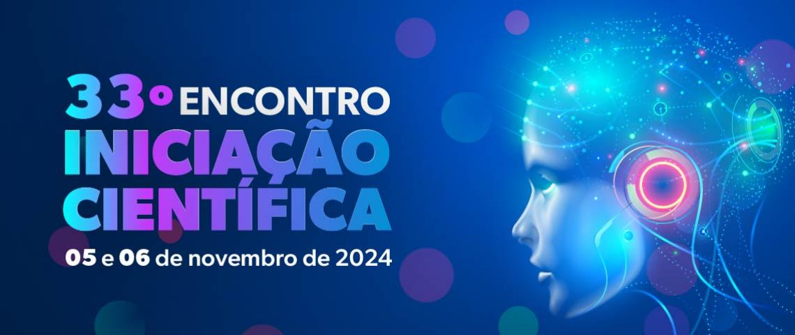

O que é a Iniciação Científica?
A Iniciação Científica é um processo de aprendizado onde estudantes, geralmente de graduação, começam a se envolver com a pesquisa científica. Durante esse processo, eles têm a oportunidade de desenvolver habilidades para investigar, analisar dados e entender metodologias científicas, sob a orientação de um professor ou pesquisador experiente. Em resumo, é uma experiência prática de pesquisa, onde o estudante explora um tema específico, coleta e analisa informações, e aprende como contribuir para o avanço do conhecimento em uma área.
Objetivos da Iniciação Científica na PUC
A iniciação científica tem como objetivo introduzir os alunos ao universo da pesquisa acadêmica, incentivando o desenvolvimento de habilidades como o pensamento crítico, a criatividade e a metodologia científica. Além disso, busca promover a inovação, aprofundar o conhecimento em áreas específicas e preparar os estudantes para futuras etapas acadêmicas, como mestrado e doutorado.
Como participar da Iniciação Científica na PUC?
1.Informar-se sobre os editais:
→ Acompanhe os editais na PUC, que geralmente são divulgados no site da instituição ou por meio de comunicados nos departamentos acadêmicos.
2.Escolha do orientador:
→ Identifique um professor que tenha projetos na área de interesse e entre em contato para demonstrar interesse em participar.
3.Elaboração do projeto:
→ Junto com o orientador, desenvolva um plano de pesquisa, detalhando os objetivos, metodologia e cronograma.
4.Submissão da proposta:
→ Siga as instruções do edital para submeter o projeto à avaliação do programa. Após a aprovação, você começará a desenvolver o projeto sob a orientação do professor.